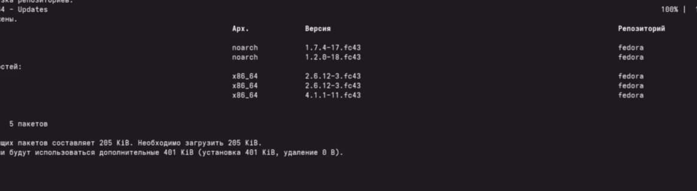
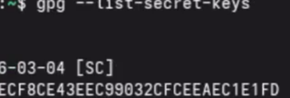
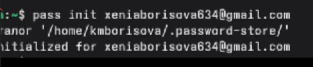
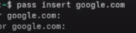
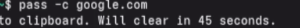
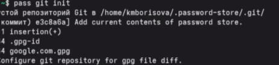

Студент НБИбд-01-25
Студент НБИбд-01-25Автор: Борисова Ксения Михайловна Преподаватель: Кулябов Дмитрий Сергеевич профессор * профессор кафедры теории вероятностей и кибербезопасности * Российский университет дружбы народов им. П. Лумумбы * kulyabov-ds@rudn.ru * https://yamadharma.github.io/ru/
Информация о докладчике
Студент НБИбд-01-25
Настройка рабочей среды
Установить менеджер паролей pass,установить дополнительное программное обеспечение, установить chezmoi.
Установка pass

Создание gpg-ключа

Инициализация хранилища pass

Добавление паролей

Просмотр и копирование паролей

Синхронизация с Git

Установка chezmoi

Создаю свой репозиторий

Переношу все на GitHub

Настраиваю машину

Установка дополнительного ПО

Установка шрифтов

В ходе лабораторной работы был изучен менеджер паролей с шифрованием GPG и синхронизацией через Git - pass ; система управления конфигурационными файлами с использованием шаблонов и Git-репозитория- chezmoi. Созданы репозитории на Github,добавлены пароли и конфигурационные файлы.
ТУИС. Архитектура компьютеров и операционные системы. Раздел “Операционные системы”. Лабораторная работа №5.